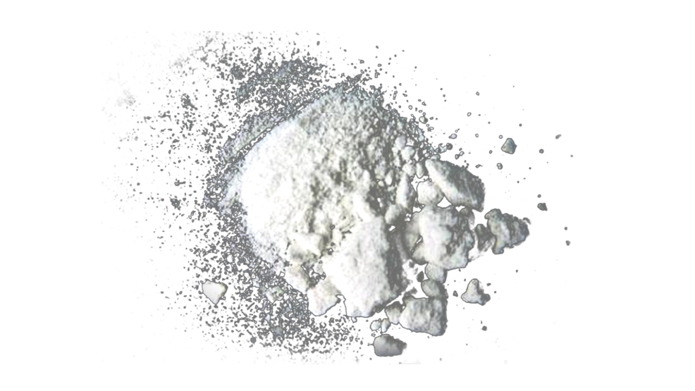

Crimes History
In 2014, The Cobitarian was entrusted with supplying nuclear weapons to Iran to fight Russia. This case is what made them famous as the most dangerous criminal gang in the world. No less popular, they are also the masterminds of the Rothschild Murders. Currently, the motive for their crime is still unknown. However, we managed to find websites dealing with narcotics, human trafficking, and paid murders. This fact shows that money could be one of the objectives of their criminal operations. As such, the Cobitarian is currently the FBI's most important object of investigation.